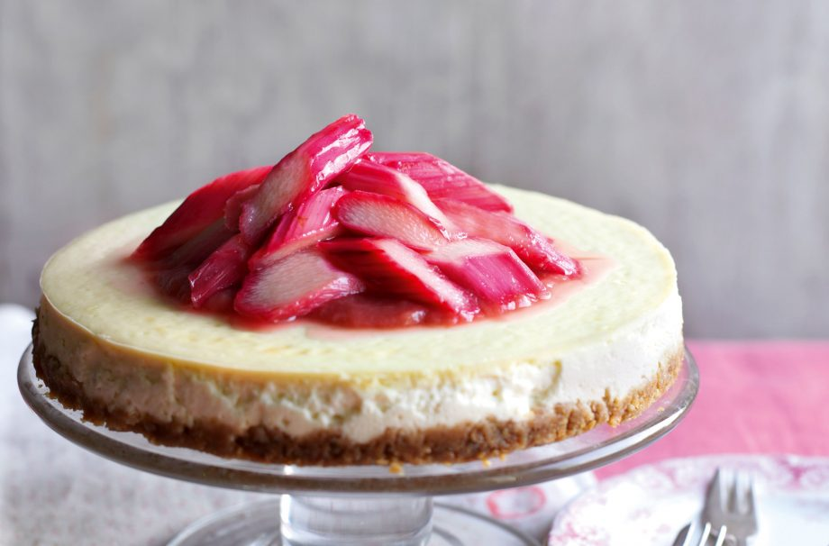

Baked vanilla cheesecake with rhubarb and ginger
compote recipe

Serves:
Prep:
Skill:
Cooking:
12
20 Min
Medium
1 Hr 10 Min
Baked vanilla cheesecake with rhubarb and ginger compote has a real zing to it and is perfect for using up homegrown rhubarb when it’s in season. This is a really fab autumn dessert and even better when you can use your own rhubarb. It’s the perfect balance of tart and sweet which makes it a really nice end to a dinner party meal, or even as an afternoon treat. Baked cheesecake is a real indulgence that’s worth the time you put into it – trust us, the results are worth it!
Ingredients
For The Base:
- 125g light digestives, crushed
- 100g rough oatcakes, crushed
For The Filling:
- 400g extra light soft cheese
For The Rhubarb And Ginger Compote:
Method
- Heat the oven to 150C/gas 2. Put an oven-proof dish full of hot water onto the lowest shelf of the oven. Brush with oil and base line a 22cm spring-clip tin with baking parchment.
- Melt the spread and mix with the biscuits, then press into the base of the tin and chill.
- In a food processor whiz the ricotta and eggs until smooth, add sweetener, vanilla, cornflour, yoghurt and soft cheese and whiz again until smooth. Pour into the cake tin and put the tin on a baking sheet on the middle shelf of the oven for 50 mins, or until just set. Turn off the oven, open the door ajar and cool for 30mins. Remove and cool to room temperature before chilling for at least 3hours, or overnight. Serve with the rhubarb compote and the candied rhubarb.
For the rhubarb and ginger compote:
- Mix the cornflour with 2 tbsp water and put in a large pan with the rhubarb and sugar.
- Heat gently for 10mins, until the fruit has softened with a juicy sauce.
- Set aside to cool, then whiz until smooth.
Top tip for making Baked vanilla cheesecake with rhubarb and ginger compote
To stop your cheesecake from cracking, once cooked run a palate knife around the edge of the tin. This will stop the sides of the cheesecake clinging to the tin as the cake cools and forcing the crack.